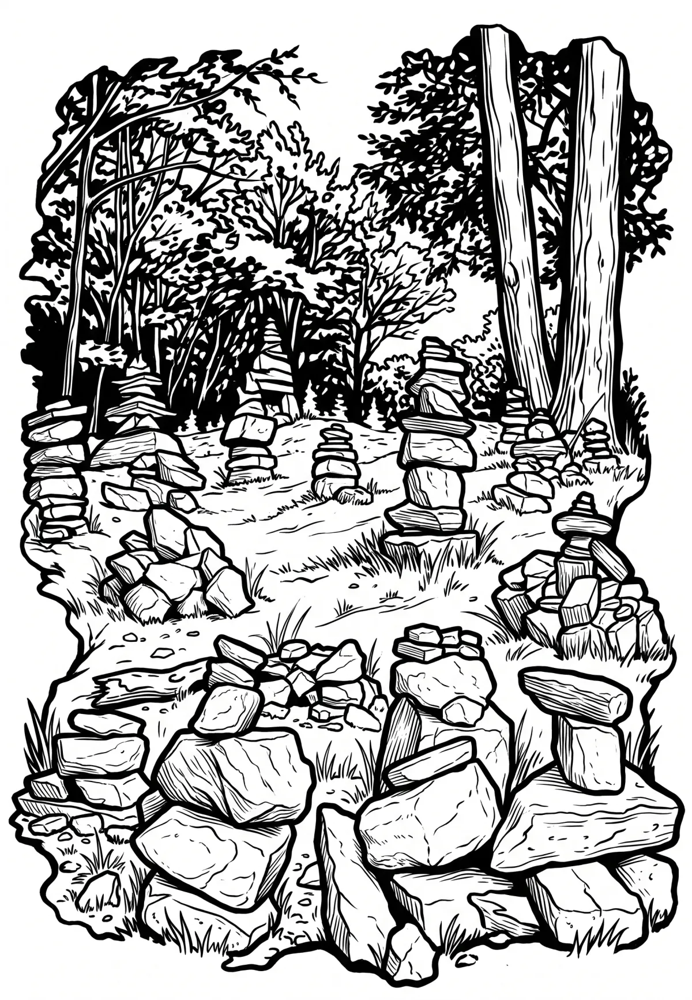

Tanečnice
Tanečnice je hora v Moravskoslezských Beskydech, 1 km severovýchodně od Pusteven a 4 km jihovýchodně od Trojanovic. Zalesněno smrko-bukovým lesem. Podle jedné z pověstí dostala hora svůj název podle pohanských obřadů doprovázených divokými tanečními reji. Jiná pověst vypráví o líné Barce, která doma nikdy s ničím nepomohla, jen noc co noc utíkala do lesa a za svitu měsíce tančila.
Více na Wikipedii